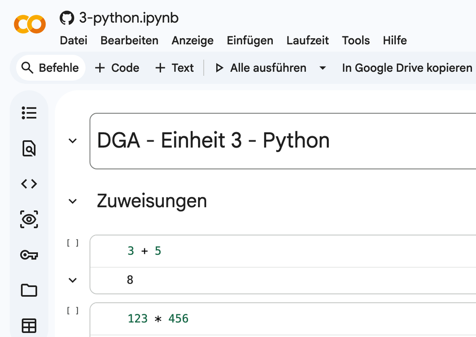
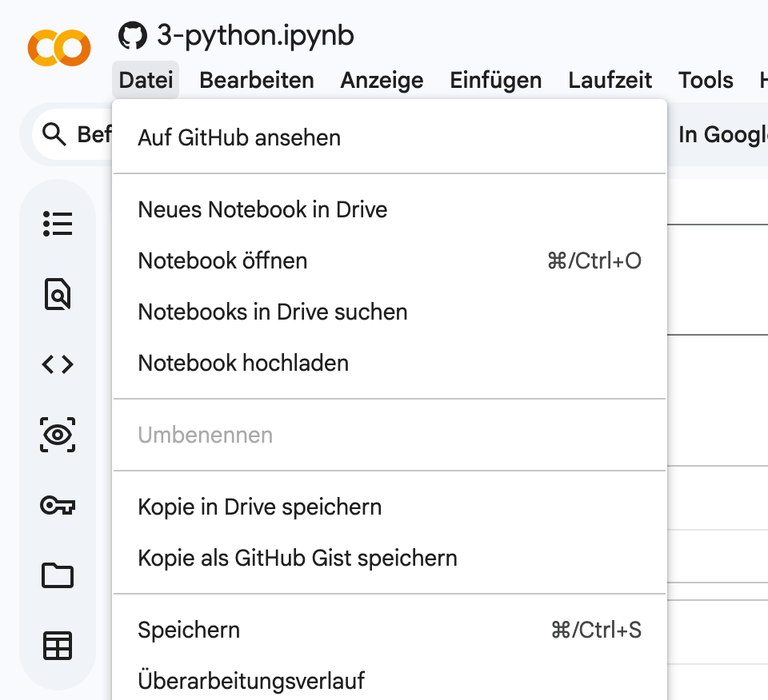

Beliebtheit von Programmiersprachen in %, monatlich 2001 bis November 2026:
Python im Vergleich zu C, C++, Java, C# und JavaScript (grau)
Quelle: TIOBE Programming Community Index, Daten über github.com/toUpperCase78/tiobe-index-ratings


preis = 20
menge = 3
umsatz = preis * menge
= ist eine Zuweisung: rechts berechnen, links unter einem Namen speichern_, nicht mit einer Ziffer beginnen: total_priceumsatz und Umsatz sind verschiedenpreis = 2020menge = 3203umsatz = preis * menge20360menge = 520560umsatz = preis * menge205100neuer Wertbleibt erhalten
umsatz rechnet sich nicht von selbst neu (Schritt 4)| Typ | Bedeutung | Beispiel |
|---|---|---|
int | ganze Zahl | 3 |
float | Kommazahl (mit Punkt) | 19.90 |
str | Text | "Graz" |
bool | Wahrheitswert | True, False |
type(wert) zeigt den Typ eines Werts
ergebnis = round(19.567, 2)
19.57
len("Graz") # 4
type(3) # int
print("Hallo") # zeigt Hallo an
budget = int("1250") # Text in Zahl
preis = float("19.90") # Text in Kommazahl
text = "Jahr " + str(2026) # Zahl in Text
print("Budget:", budget) # mehrere Werte ausgeben
print() gibt mehrere Werte, durch Kommas getrennt, nebeneinander ausAbschnitt 1: Variablen und Datentypen
ca. 10 Min.
| SQL | Python | Bedeutung |
|---|---|---|
= | == | gleich |
<> | != | ungleich |
< > <= >= | < > <= >= | kleiner, größer |
AND OR NOT | and or not | verknüpfen |
IN ('A', 'B') | in ["A", "B"] | ist in der Liste |
True oder False"Austria" == "austria" ist FalseAbschnitt 2: Vergleiche und Logik
ca. 10 Min.
bestellwerte = [120.5, 89.9, 230.0, 45.0]
bestellwerte[0] # 120.5 (Index ab 0)
bestellwerte[-1] # 45.0 (vom Ende)
len(bestellwerte) # 4
bestellwerte.append(99.0) # hinten anhängen
max(bestellwerte) # auch sum, min, sorted
Eine Liste speichert mehrere Werte in fester Reihenfolge
bestellwerte = [120.5, 89.9, 230.0, 45.0]0120.5-4189.9-32230.0-2345.0-1bestellwerte[0]0120.5-4189.9-32230.0-2345.0-1→ 120.5bestellwerte[-1]0120.5-4189.9-32230.0-2345.0-1→ 45.0len(bestellwerte)0120.5-4189.9-32230.0-2345.0-1→ 4bestellwerte.append(99.0)0120.5-5189.9-42230.0-3345.0-2499.0-1max(bestellwerte)0120.5-5189.9-42230.0-3345.0-2499.0-1→ 230.00 Index von vorne -1 Index von hinten gelesen angehängt
kunde = {"name": "Ernst Handel", "stadt": "Graz"}
kunde["stadt"] # "Graz"
kunde["bestellungen"] = 10 # neues Paar hinzufügen
Abschnitt 3: Listen und Dictionaries
ca. 15 Min.
if bestellwert >= 200:
rabatt = 0.10
elif bestellwert >= 100:
rabatt = 0.05
else:
rabatt = 0
Abschnitt 4: Verzweigungen
ca. 15 Min.
bestellwerte = [120.5, 89.9, 230.0, 45.0]
for wert in bestellwerte:
print("Bestellung über", wert)
wert enthält dabei nacheinander jedes Element der Liste
bestellwerte = [120.5, 89.9, 230.0, 45.0]
Aufsummieren
summe = 0
for wert in bestellwerte:
summe = summe + wert
Filtern
grosse = []
for wert in bestellwerte:
if wert > 100:
grosse.append(wert)
Abschnitt 5: Schleifen
ca. 15 Min.
def brutto(netto):
return netto * 1.2
brutto(100) # 120.0
def, Name, Parameter in Klammern, Doppelpunkt, eingerückter Blockreturn gibt das Ergebnis zurück, print zeigt es nur an
check_result(35, 4.90, versandkosten(35))
Input: 35 Expected result: 4.9 Actual result: 4.9 ✅ OK! (actual result == expected result)
Abschnitt 6: Funktionen
ca. 20 Min.
| Fehler | typische Ursache |
|---|---|
NameError | Tippfehler im Namen oder Zelle nicht ausgeführt |
TypeError | Werte passen nicht zusammen, z. B. Text + Zahl |
SyntaxErrorIndentationError | Doppelpunkt, Klammer oder Einrückung fehlt |
Die letzte Zeile der Meldung zuerst lesen
Abschnitt 7: Fehlermeldungen
ca. 5 Min.
import pandas as pd
SQL = """
SELECT Country, COUNT(*) AS Kunden
FROM customers
GROUP BY Country
"""
pd.read_sql_query(SQL, db)
customers, order_details'Austria', nicht 'austria'LIMIT, kein TOPGROUP BY noch aggregiert: kein Fehler, sondern ein beliebiger WertAbschnitt 8: SQL aus Python
ca. 10 Min.
| Baustein | Zweck |
|---|---|
| Variable, Datentyp | einen Wert speichern |
| Liste, Dictionary | viele Werte sammeln |
if, elif, else | entscheiden |
for | wiederholen |
def, return | zusammenfassen und wiederverwenden |